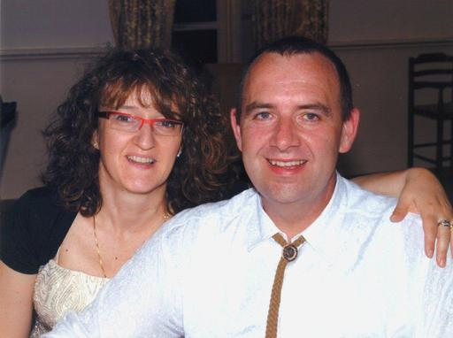

Who we are

We are an operating society in industrial field since 1993. Our main activity consists in volumetric continuous pumps and liquid mixing systems maintenance. Our long time experience on the entire national territory has put in evidence the necessity to manage a warehouse exchanges again economically in favorable way, technically to the effective vanguard and in answering to the requirements of the customers. In this within we have developed a net of services that go from the execution of pieces to design, to rectify of usurate parts, to the finding, storing and distribution of spare parts, standards or on specific demand for the customer.